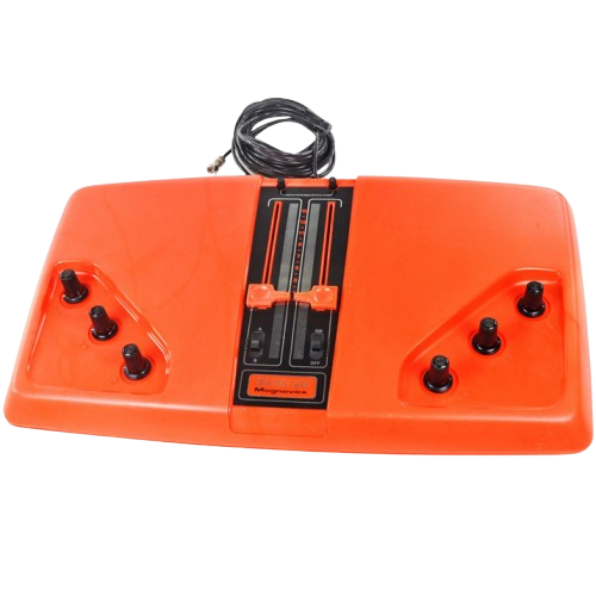
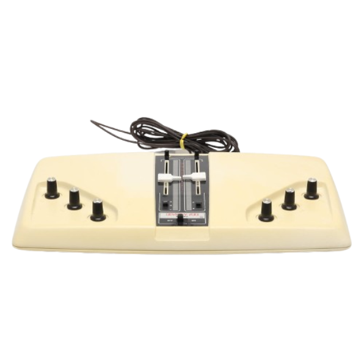
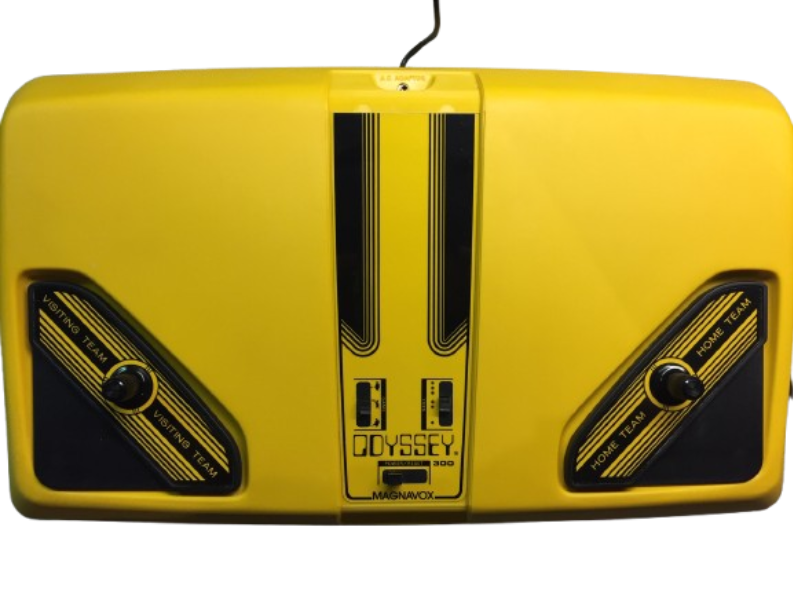
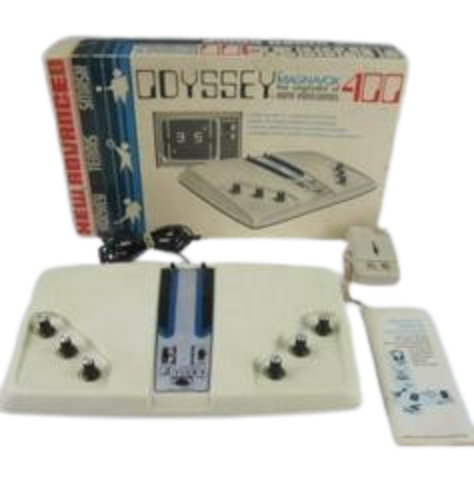
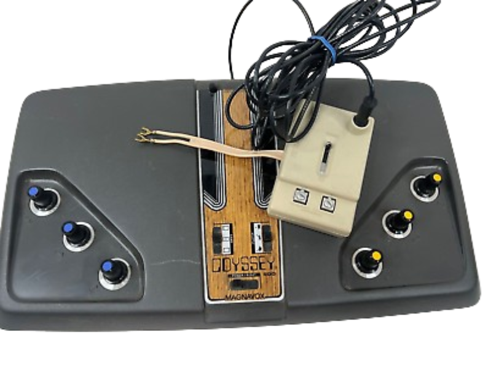
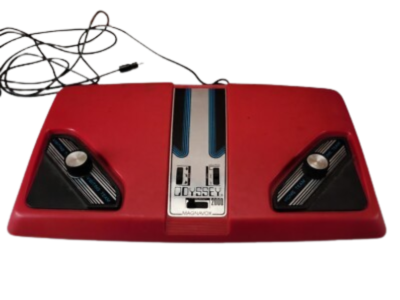
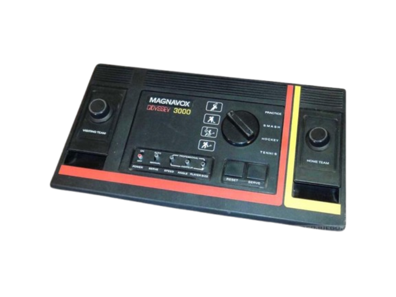
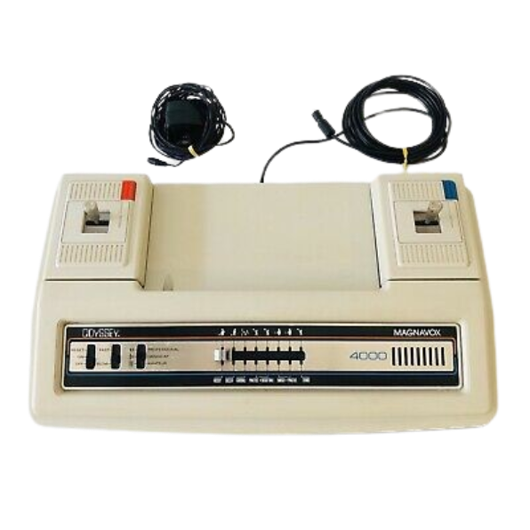

Videogames
História dos Videogames

Odyssey 100 (1975)
O primeiro console "dedicado" da série, com jogos de tênis e hóquei

Odyssey 200 (1975)
Uma "edição de luxo" do Odyssey 100, com suporte para quatro jogadores e o jogo "smash".

Odyssey 300 (1976)
Um redesenho do Odyssey 200, com mais níveis de dificuldade.

Odyssey 400 (1976)
Introduziu um placar digital, graças a um novo chip da Texas Instruments.

Odyssey 500 (1976)
Substituiu os "batedores" simples por desenhos de jogadores na tela e adicionou mais jogos.

Odyssey 2000(1977)
Introduziu um placar digital, graças a um novo chip da Texas Instruments.

Odyssey 3000(1977)
Tinha controles destacáveis e os mesmos quatro jogos do Odyssey 2000.

Odyssey 4000(1977)
A última consola "dedicada" da série Odyssey nos EUA, com controles destacáveis